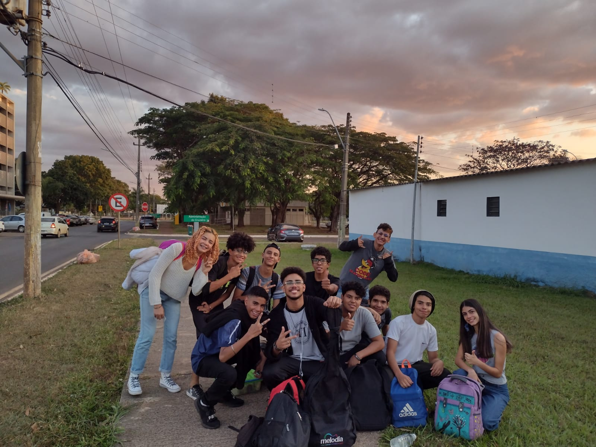

Considerações Finais
O projeto de horta e muro verde é uma oportunidade para a escola se tornar um exemplo de sustentabilidade, ao mesmo tempo em que educa e engaja a comunidade escolar em práticas ecológicas e saudáveis. É um investimento que, além de melhorar o ambiente escolar, traz benefícios a longo prazo para o meio ambiente e para a saúde dos alunos.